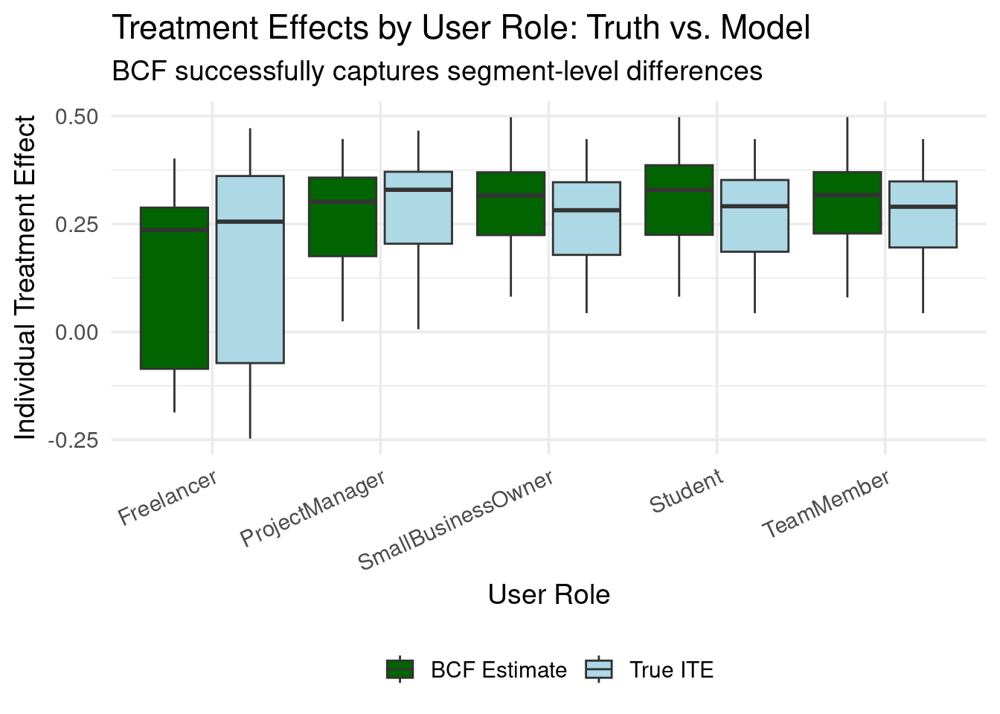

24.1 Beyond “Who Will Convert” to “Who Will Convert Because of Us”
Business data scientists in the tech industry frequently face the task of identifying which users to nudge toward a desired action. Consider these common scenarios:
Encouraging long-form video creators to experiment with shorter formats
Prompting prolific product reviewers to establish their own storefront
Selecting the most suitable candidates for an exclusive event invitation
Offering a complimentary trial or discount on a service
The naive approach treats this as a standard prediction problem: who is most likely to take action X? But this misses the crucial insight. You don’t want to spend resources on users who would have acted anyway. What you really want to know is: whose behavior will change because of your intervention?
This shift from prediction to causation isn’t just academic—it’s the difference between wasting marketing budget on the “sure things” and efficiently targeting users who actually need a nudge.
The Causal Propensity Framework
When we think about causal propensity, three key principles emerge:
1. Receptivity Over Likelihood
A user’s propensity to act due to a nudge is meaningful only if they’re actually receptive to that nudge. If they won’t pay attention or be influenced, the nudge is irrelevant. An intervention cannot cause a change if the user isn’t open to it.
2. Sustained Impact (Avoiding Buyer’s Regret)
True high propensity implies that the user not only takes the desired action but continues it long-term, signaling a genuinely positive experience. A fleeting change followed by disengagement or regret isn’t the goal—we want interventions that lead to lasting, beneficial changes.
3. Revealed Preferences as Success Metrics
Rather than focusing on immediate revenue metrics that might be misleading (a user might purchase, regret it, and churn), observing continued engagement serves as a practical proxy. It tells us the intervention was likely a good fit for them.
24.2 An Example with Synthetic Data
Let’s illustrate with a synthetic example. Imagine a company, SaaSify Solutions, which provides “TaskMaster,” a project management tool. TaskMaster has a free basic tier and a premium “Pro Tier.” To boost conversions to the paid Pro Tier, SaaSify decides to offer a one-month free trial. The Pro Tier boasts advanced features such as team collaboration, detailed analytics, and automation.
The Challenge: Identifying the Right Users for the Free Trial
The teams at SaaSify understand that a free trial isn’t universally effective. Their objective is to measure the causal impact of the Pro Tier trial. Specifically, they want to determine how offering the trial influences a user’s probability of subscribing to the paid tier three months down the line, relative to users not offered the trial. The aim is to target users for whom the trial will be most impactful and avoid offering it where it’s likely to be ineffective or, worse, counterproductive.
To achieve this, they randomly assign the free trial offer to a subset of users—this randomization is key for causal inference. The outcome of interest is the subscription status three months after the trial offer. The R code that follows generates synthetic data for this scenario.
24.3 Bayesian Causal Forest: Modeling the Heterogeneity
Now comes the modeling. We’ll use stochtree to implement Bayesian Causal Forests (BCF), which excels at capturing complex, non-linear treatment effect heterogeneity.
Why BCF?
Traditional methods assume treatment effects are either constant or follow simple patterns. BCF uses tree-based methods to discover complex interactions and non-linearities while maintaining proper uncertainty quantification through Bayesian inference.
# ── Load BCF package ─────────────────────────────────────────────────────────────library(stochtree)library(tictoc)# ── Prepare data for modeling ────────────────────────────────────────────────────X_cov <- simulated_data %>%select( scaled_activity_free, is_project_manager, has_interacted_feature_requests, is_freelancer, is_low_activity_user ) %>%mutate(across(everything(), as.numeric)) %>%as.data.frame()Z_treat <- simulated_data$offered_free_trialY_out <- simulated_data$is_subscribed_after_3months# ── Fit the BCF model ────────────────────────────────────────────────────────────tic("BCF model fitting")bcf_fit <- stochtree::bcf(X_train = X_cov,Z_train = Z_treat,y_train = Y_out,propensity_train =NULL, # Known randomization probabilitiesnum_gfr =100,num_burnin=0,num_mcmc =8000,general_params =list(random_seed =142,probit_outcome_model =TRUE, # Use probit link for binary outcomessample_sigma2_global =FALSE,sigma2_global_init =1.0 ),prognostic_forest_params =list(sample_sigma2_leaf =FALSE),treatment_effect_forest_params =list(sample_sigma2_leaf =FALSE))toc()
BCF model fitting: 693.587 sec elapsed
Model Diagnostics: Did It Converge?
Before trusting any results, we must verify the model converged properly:
library(posterior)library(bayesplot)# Extract posterior drawstau_raw <- bcf_fit$tau_hat_train mu_raw <- bcf_fit$mu_hat_train# Convert to probability scale (this is what we care about!)delta_bcf_draws <-pnorm(mu_raw + tau_raw) -pnorm(mu_raw)n_draws <-ncol(delta_bcf_draws)# Average Treatment Effect across all drawsate_draws <-colMeans(delta_bcf_draws)# Convergence diagnosticsbayesplot::mcmc_trace(matrix(ate_draws, ncol =1, dimnames =list(NULL, "ATE")),facet_args =list(nrow =1), size =0.4) +labs(title ="MCMC Trace Plot: Average Treatment Effect",subtitle ="Looking for good mixing (no trends or flat sections)")
A line showing the sampled value of the ATE at every iteration.
Good signs: the line “wanders” around a stable level with no visible upward or downward drift. Long flat stretches or a clear trend indicate poor mixing or an unconverged chain.
Bulk ESS
The effective number of independent draws in the centre of the posterior (mean, sd, etc.).
For a scalar like the ATE, a few hundred independent draws is usually enough. If Bulk ESS is below ≈ 100, extend the run (more iterations) or re-tune the model.
Tail ESS
Same idea as Bulk ESS but focused on the tails of the posterior (important for credible intervals and extreme quantiles).
Values above ≈ 100 yield stable 2.5 % and 97.5 % quantiles; lower values mean those intervals are still noisy.
Quick checklist
Trace plot: no obvious drift or long flat segments.
Bulk ESS and Tail ESS comfortably exceed the minimum rules of thumb.
If both items look healthy, you can proceed with summaries, plots, and downstream decisions, confident that Monte Carlo error is negligible relative to the signal in your data.
After verifying these diagnostics, extract and summarise the posterior draws to understand both the overall Average Treatment Effect (ATE) and the distribution of Individual Treatment Effects (ITEs) across users.
We can also examine how well the BCF model identifies users whose true ITE exceeds a certain threshold. This is often a practical concern: who are the users for whom the intervention is “meaningfully” positive?
## ------------------------------------------------------------## Visual: BCF posterior P(ITE > thresh) vs. truth label## ------------------------------------------------------------thresh <-0.05# 5 percentage point improvement threshold# BCF posterior probability that ITE > thresholdp_bcf_gt <-rowMeans(delta_bcf_draws > thresh)# Ground truthsim_with_probs <- simulated_data %>%mutate(true_gt = ITE_prob_subscribe > thresh,bcf_prob_gt = p_bcf_gt )# Calibration visualizationsim_with_probs %>%mutate(TruthLabel =factor(ifelse(true_gt,paste0("True ITE > ", thresh),paste0("True ITE ≤ ", thresh)) ) ) %>%ggplot(aes(bcf_prob_gt)) +geom_histogram(binwidth =0.05, fill ="steelblue", color ="white", alpha =0.9) +facet_wrap(~ TruthLabel, ncol =1, scales ="free_y") +scale_x_continuous(breaks =seq(0, 1, 0.25),labels = scales::percent_format(accuracy =1) ) +labs(title ="Model Calibration: Posterior Probabilities vs. Ground Truth",subtitle =paste0("BCF posterior P(ITE > ", thresh, ") by actual truth status"),x ="BCF Posterior Probability",y ="Number of Users" ) +theme_minimal(base_size =14) +theme(strip.text =element_text(face ="bold"))
Segment-Level Insights
Business stakeholders often think in terms of user segments:
# ── CATE by user role ────────────────────────────────────────────────────────────segment_comparison <- simulated_data %>%pivot_longer(cols =c(ITE_prob_subscribe, ITE_bcf),names_to ="estimate_type",values_to ="ITE" ) %>%mutate(estimate_type =recode(estimate_type,ITE_prob_subscribe ="True ITE",ITE_bcf ="BCF Estimate" ) )ggplot(segment_comparison, aes(user_role, ITE, fill = estimate_type)) +geom_boxplot(width =0.8,position =position_dodge(width =0.9),outlier.alpha =0.3 ) +scale_fill_manual(values =c("True ITE"="lightblue", "BCF Estimate"="darkgreen"),name =NULL ) +labs(title ="Treatment Effects by User Role: Truth vs. Model",subtitle ="BCF successfully captures segment-level differences",x ="User Role",y ="Individual Treatment Effect" ) +theme_minimal(base_size =14) +theme(axis.text.x =element_text(angle =25, hjust =1),legend.position ="bottom" )

24.4 Prioritising control-group creators for a follow-up nudge
One common “Phase-2” use-case is to re-target users who were originally in the control group but appear—according to the model—to be the most likely to benefit from receiving the treatment.
Below we illustrate a principled, fully Bayesian way to do that.
Goal: pick the N creators (say N = 1000) in the control group whose posterior probability of belonging to the true top-N is highest.
Method
The goal is to identify control-group users who are most likely to benefit from the intervention, where “benefit” is defined as a high positive Individual Treatment Effect (ITE) on their probability of subscription.
For every posterior draw (d = 1, , D) from our BCF model, we have estimates of ({id}) (latent prognostic effect) and ({id}) (latent treatment effect) for each creator (i). We use these to calculate the ITE on the probability scale for that draw: \[
\Delta p_{id} = \Phi(\mu_{id} + \tau_{id}) - \Phi(\mu_{id})
\] where () is the standard normal CDF. This (p_{id}) represents the estimated change in subscription probability for creator (i) due to the trial, according to draw (d).
Within each posterior draw (d):
We consider only the creators who were in the control group (i.e., not offered the trial).
We rank these control-group creators based on their estimated ITE on the probability scale, (p_{id}), in descending order.
We mark the top N ranked creators with a ‘1’ (indicating they are among the most positively impacted in this draw) and the rest with a ‘0’.
After repeating this for all (D) posterior draws, we average these indicator marks for each creator (i) in the control group: \[
\text{Prob}(\text{User } i \text{ is Top-N}) = \frac{1}{D} \sum_{d=1}^{D} \mathbf{1}\{\text{creator } i \text{ is in the top } N \text{ (by } \Delta p_{id}\text{) in draw } d\}
\] This gives us ( ( i ) ), the posterior probability that creator (i) is truly among the N control-group users who would experience the largest increase in subscription probability if treated.
We then select the N control-group creators who have the highest calculated posterior probability ( ( i ) ).
Finally, using the ground-truth ITEs on the probability scale (ITE_prob_subscribe from our synthetic DGP), we evaluate our selection by checking how many of the chosen N creators actually are among the true top-N most impacted individuals in the control group.
## ------------------------------------------------------------## Target the N control creators with highest posterior P(top-N)## ------------------------------------------------------------N_target <-1000control_idx <-which(Z_treat ==0)delta_control <- delta_bcf_draws[control_idx, ] # Δ-drawsindicator <-apply( delta_control, 2L,function(v) { idx <-integer(length(v)); idx[order(v, decreasing =TRUE)[1:N_target]] <-1; idx })prob_topN <-rowMeans(indicator)simulated_data$prob_topN <-NA_real_simulated_data$prob_topN[control_idx] <- prob_topN## 5. pick the creators with highest P(top-N) -------------------selected <- simulated_data %>%filter(offered_free_trial ==0) %>%slice_max(prob_topN, n = N_target, with_ties =FALSE)## 6. evaluate against ground truth -----------------------------truth_ranks <- simulated_data %>%filter(offered_free_trial ==0) %>%mutate(true_rank =rank(-ITE_prob_subscribe, ties.method ="min")) %>%select(user_id, true_rank)selected <- selected %>%left_join(truth_ranks, by ="user_id") %>%mutate(hit = true_rank <= N_target)hit_rate <-mean(selected$hit)message(sprintf("Model picked %d of the true top %d creators (hit-rate = %.1f%%).",sum(selected$hit), N_target, 100* hit_rate))
We can also examine the false positive with the code bellow:
## ------------------------------------------------------------## False-positives: creators picked by the model but *not*## in the true top-N (how wrong are we?)## ------------------------------------------------------------false_pos <- selected %>%filter(!hit) %>%# keep only the missesarrange(true_rank) %>%# smaller rank = closer to the cut-offselect( user_id, prob_topN, # posterior P(being top-N) true_rank, # ground-truth rank ITE_prob_subscribe, # true ITE (prob. scale) ITE_bcf # posterior mean ITE )# peek at the first 15 for a sense of magnitudeknitr::kable(head(false_pos, 15),caption =paste0("Top 15 false-positives (model-selected but true rank > ", N_target, ")" ),digits =3)
Top 15 false-positives (model-selected but true rank > 1000)
user_id
prob_topN
true_rank
ITE_prob_subscribe
ITE_bcf
1981
0.901
1003
0.319
0.350
950
0.905
1004
0.319
0.350
2520
0.900
1005
0.319
0.350
2610
0.897
1006
0.319
0.350
1135
0.903
1008
0.318
0.350
405
0.902
1010
0.318
0.350
2198
0.892
1011
0.318
0.349
4943
0.881
1012
0.318
0.349
2538
0.890
1013
0.318
0.349
1305
0.896
1014
0.318
0.349
3466
0.890
1015
0.318
0.349
413
0.902
1017
0.318
0.349
650
0.904
1019
0.318
0.349
712
0.903
1022
0.317
0.350
4624
0.599
1025
0.317
0.338
# summary stats: how far off are we on average?summary(false_pos$true_rank)
Min. 1st Qu. Median Mean 3rd Qu. Max.
1003 1113 1213 1217 1334 1428
24.5 Take-aways — What to remember before you hit “Send Nudge”
Causality beats raw prediction
Don’t waste offers on the “sure-thing” crowd. Causal propensity models single out the users whose behaviour is expected to change because of your intervention, not the ones who were already halfway there.
Randomisation is your super-power
A/B assignment (or any well-designed experiment) manufactures the missing counterfactual. Without it, every downstream estimate—however sophisticated—rests on unverifiable assumptions.
Heterogeneity is the rule, not the exception
Bayesian Causal Forests surface nuanced, non-linear treatment patterns that simple uplift models miss. They let you
Measure individual treatment effects (ITEs) — a per-user ROI forecast.
Rank control-group users by posterior “top-N” probability — a principled way to choose whom to target next.
Summarise conditional ATEs (CATEs) for segments your business cares about — fuel for clear, defensible strategy.
Efficiency follows from focus
By steering incentives to users with high posterior gain—and sparing those likely to regret or ignore them—you compress spend, boost long-run value, and create experiments that keep paying for themselves.
TL;DR: Wrap your propensity work in a causal cloak: randomise, model heterogeneity, act on posterior uncertainty, and watch both your precision and your business impact climb.
Source Code
---title: "Causal Propensity Modeling"share: permalink: "https://book.martinez.fyi/causalPropensity.html" description: "Business Data Science: What Does it Mean to Be Data-Driven?" linkedin: true email: true mastodon: true---## Beyond "Who Will Convert" to "Who Will Convert Because of Us"<img src="img/causal_propensity.png" align="right" height="280" alt="Causal Propensity Modeling with BCF"/>Business data scientists in the tech industry frequently face the task of identifying **which users to nudge toward a desired action**. Consider these common scenarios:- Encouraging long-form video creators to experiment with shorter formats - Prompting prolific product reviewers to establish their own storefront - Selecting the most suitable candidates for an exclusive event invitation- Offering a complimentary trial or discount on a serviceThe naive approach treats this as a standard prediction problem: *who is most likely to take action X?* But this misses the crucial insight. **You don't want to spend resources on users who would have acted anyway.** What you really want to know is: **whose behavior will change *because* of your intervention?**This shift from prediction to causation isn't just academic—it's the difference between wasting marketing budget on the "sure things" and efficiently targeting users who actually need a nudge.### The Causal Propensity FrameworkWhen we think about causal propensity, three key principles emerge:**1. Receptivity Over Likelihood** A user's propensity to act due to a nudge is meaningful only if they're actually receptive to that nudge. If they won't pay attention or be influenced, the nudge is irrelevant. An intervention cannot *cause* a change if the user isn't open to it.**2. Sustained Impact (Avoiding Buyer's Regret)** True high propensity implies that the user not only takes the desired action but continues it long-term, signaling a genuinely positive experience. A fleeting change followed by disengagement or regret isn't the goal—we want interventions that lead to lasting, beneficial changes.**3. Revealed Preferences as Success Metrics** Rather than focusing on immediate revenue metrics that might be misleading (a user might purchase, regret it, and churn), observing continued engagement serves as a practical proxy. It tells us the intervention was likely a good fit for them.## An Example with Synthetic DataLet's illustrate with a synthetic example. Imagine a company, SaaSify Solutions,which provides "TaskMaster," a project management tool. TaskMaster has a freebasic tier and a premium "Pro Tier." To boost conversions to the paid Pro Tier,SaaSify decides to offer a one-month free trial. The Pro Tier boasts advancedfeatures such as team collaboration, detailed analytics, and automation.### The Challenge: Identifying the Right Users for the Free TrialThe teams at SaaSify understand that a free trial isn't universally effective.Their objective is to measure the **causal impact** of the Pro Tier trial.Specifically, they want to determine how offering the trial influences a user'sprobability of subscribing to the paid tier three months down the line, relativeto users not offered the trial. The aim is to target users for whom the trialwill be most impactful and avoid offering it where it's likely to be ineffectiveor, worse, counterproductive.To achieve this, they randomly assign the free trial offer to a subset ofusers—this randomization is key for causal inference. The outcome of interestis the subscription status three months after the trial offer. The R code thatfollows generates synthetic data for this scenario.```{r}#| message: false# ── pkgs ────────────────────────────────────────────────────────────────────────library(dplyr) # wranglinglibrary(tidyr) # pivot_longer laterlibrary(tibble) # tibbleslibrary(ggplot2) # plots# ── 0. helpers ─────────────────────────────────────────────────────────────────clip_values <-function(x, lo =0, hi =150) pmin(pmax(x, lo), hi)# ── 1. configuration ───────────────────────────────────────────────────────────cfg <-list(n_users =5000,prop_offered_trial =0.50,# Coefficients now live on the **latent-normal (probit) scale**beta =c(intercept =-0.5,activity_free =0.6,project_manager =0.8,feature_requests =0.5,freelancer =-0.2 ),tau =c(intercept_trial_effect =0.8,activity_free_trial_effect =0.3,project_manager_trial_effect =0.5,feature_requests_trial_effect =0.6,interaction_freelancer_low_activity =-2.5 ),user_role_prob =c(Freelancer =0.30,ProjectManager =0.15,SmallBusinessOwner=0.25,Student =0.15,TeamMember =0.15 ),activity_score_shape =3,activity_score_rate =0.5,activity_score_multiplier =10,low_activity_quantile =0.30,prop_interacted_feature_requests =0.20)set.seed(123) # reproducibility# ── 2. simulate covariates ─────────────────────────────────────────────────────raw_users_data <-tibble(user_id =seq_len(cfg$n_users),# raw free-tier activityraw_activity_score =rgamma( cfg$n_users,shape = cfg$activity_score_shape,rate = cfg$activity_score_rate ) * cfg$activity_score_multiplier,# user roleuser_role =sample(names(cfg$user_role_prob), cfg$n_users,replace =TRUE,prob = cfg$user_role_prob ),# engagement with feature requestshas_interacted_feature_requests =rbinom(cfg$n_users, 1, cfg$prop_interacted_feature_requests)) %>%mutate(raw_activity_score =clip_values(raw_activity_score, 0, 150),scaled_activity_free =as.numeric(scale(raw_activity_score)),is_freelancer =as.integer(user_role =="Freelancer"),is_project_manager =as.integer(user_role =="ProjectManager"),is_low_activity_user = scaled_activity_free <quantile( scaled_activity_free, cfg$low_activity_quantile,na.rm =TRUE ),offered_free_trial =rbinom(n(), 1, cfg$prop_offered_trial) )# ── 3. potential outcomes & realised subscription (PROBIT DGP) ───────────────simulated_data <-with(cfg, { raw_users_data %>%mutate(## latent mean WITHOUT the trial (μ(X))w0 = beta["intercept"] + beta["activity_free"] * scaled_activity_free + beta["project_manager"] * is_project_manager + beta["feature_requests"] * has_interacted_feature_requests + beta["freelancer"] * is_freelancer,## latent treatment effect τ(X)tau_latent = tau["intercept_trial_effect"] + tau["activity_free_trial_effect"] * scaled_activity_free + tau["project_manager_trial_effect"] * is_project_manager + tau["feature_requests_trial_effect"] * has_interacted_feature_requests + tau["interaction_freelancer_low_activity"] * is_freelancer * is_low_activity_user,## latent mean WITH the trialw1 = w0 + tau_latent,## probabilities via Φ (standard-normal CDF)p0_subscribe_no_trial =pnorm(w0),p1_subscribe_with_trial=pnorm(w1),## Individual Treatment Effect on probability scaleITE_prob_subscribe = p1_subscribe_with_trial - p0_subscribe_no_trial,## observed outcomeis_subscribed_after_3months =rbinom(n(), 1,if_else(offered_free_trial ==1, p1_subscribe_with_trial, p0_subscribe_no_trial) ) )})# ── 4. quick diagnostics ──────────────────────────────────────────────────────true_ATE_prob <-mean(simulated_data$ITE_prob_subscribe)cat(sprintf("True Average Treatment Effect (ATE) on probability scale: %.4f\n", true_ATE_prob))# ── Histogram of predicted subscription probabilities ─────────────────────────simulated_data %>%select(p0_subscribe_no_trial, p1_subscribe_with_trial) %>%pivot_longer(cols =everything(),names_to ="scenario",values_to ="probability" ) %>%ggplot(aes(probability)) +geom_histogram(bins =60,fill ="steelblue",colour ="white",alpha =0.8 ) +facet_wrap(~ scenario, ncol =2) +scale_x_continuous(labels = scales::label_percent(accuracy =1), # 0–1 → 0%–100%breaks =seq(0, 1, 0.10), # nice 10-point tick markslimits =c(0, 1) ) +labs(title ="Distribution of true subscription probabilities",x ="Subscription probability (%)",y ="Users" ) +theme_minimal()# distribution of ITEsggplot(simulated_data, aes(ITE_prob_subscribe)) +geom_histogram(bins =60, fill ="steelblue", colour ="white", alpha =0.8) +geom_vline(xintercept = true_ATE_prob, colour ="red", linetype ="dashed") +annotate("text", x = true_ATE_prob, y =Inf,label =sprintf("ATE = %.3f", true_ATE_prob),hjust =-0.1, vjust =1.5, colour ="red" ) +labs(title ="Distribution of ITEs (probit DGP)",x =expression(Δ[p] == p[1] - p[0]),y ="Users" ) +theme_minimal()overwhelmed_novice_freelancers_data <- simulated_data %>%filter(is_freelancer ==1& is_low_activity_user ==1)overwhelmed_novice_freelancers_data %>%ggplot(aes(x = ITE_prob_subscribe)) +geom_histogram(bins =30,fill ="darkorange",color ="white",alpha =0.8 ) +geom_vline(xintercept =mean( overwhelmed_novice_freelancers_data$ITE_prob_subscribe,na.rm =TRUE ),color ="blue",linetype ="dashed",linewidth =1 ) +labs(title ="ITE Distribution for 'Overwhelmed Novice' Freelancers",x =expression("ITE (p"[1] *" - p"[0] *")"),y ="Frequency") +theme_minimal()high_activity_pms_data <- simulated_data %>%filter( is_project_manager ==1& scaled_activity_free >quantile(scaled_activity_free, 0.70, na.rm =TRUE) )high_activity_pms_data %>%ggplot(aes(x = ITE_prob_subscribe)) +geom_histogram(bins =30,fill ="forestgreen",color ="white",alpha =0.8 ) +geom_vline(xintercept =mean(high_activity_pms_data$ITE_prob_subscribe, na.rm =TRUE),color ="blue",linetype ="dashed",linewidth =1 ) +labs(title ="ITE Distribution for High Activity Project Managers",x =expression("ITE (p"[1] *" - p"[0] *")"),y ="Frequency") +theme_minimal()# peek at the data structure# ─────────────────────────────────────glimpse(simulated_data)```## Bayesian Causal Forest: Modeling the HeterogeneityNow comes the modeling. We'll use [stochtree](https://stochtree.ai/) to implement Bayesian Causal Forests (BCF), which excels at capturing complex, non-linear treatment effect heterogeneity.### Why BCF?Traditional methods assume treatment effects are either constant or follow simple patterns. BCF uses tree-based methods to discover complex interactions and non-linearities while maintaining proper uncertainty quantification through Bayesian inference.```{r}# ── Load BCF package ─────────────────────────────────────────────────────────────library(stochtree)library(tictoc)# ── Prepare data for modeling ────────────────────────────────────────────────────X_cov <- simulated_data %>%select( scaled_activity_free, is_project_manager, has_interacted_feature_requests, is_freelancer, is_low_activity_user ) %>%mutate(across(everything(), as.numeric)) %>%as.data.frame()Z_treat <- simulated_data$offered_free_trialY_out <- simulated_data$is_subscribed_after_3months# ── Fit the BCF model ────────────────────────────────────────────────────────────tic("BCF model fitting")bcf_fit <- stochtree::bcf(X_train = X_cov,Z_train = Z_treat,y_train = Y_out,propensity_train =NULL, # Known randomization probabilitiesnum_gfr =100,num_burnin=0,num_mcmc =8000,general_params =list(random_seed =142,probit_outcome_model =TRUE, # Use probit link for binary outcomessample_sigma2_global =FALSE,sigma2_global_init =1.0 ),prognostic_forest_params =list(sample_sigma2_leaf =FALSE),treatment_effect_forest_params =list(sample_sigma2_leaf =FALSE))toc()```### Model Diagnostics: Did It Converge?Before trusting any results, we must verify the model converged properly:```{r}#| message: false#| warning: false#| echo: truelibrary(posterior)library(bayesplot)# Extract posterior drawstau_raw <- bcf_fit$tau_hat_train mu_raw <- bcf_fit$mu_hat_train# Convert to probability scale (this is what we care about!)delta_bcf_draws <-pnorm(mu_raw + tau_raw) -pnorm(mu_raw)n_draws <-ncol(delta_bcf_draws)# Average Treatment Effect across all drawsate_draws <-colMeans(delta_bcf_draws)# Convergence diagnosticsbayesplot::mcmc_trace(matrix(ate_draws, ncol =1, dimnames =list(NULL, "ATE")),facet_args =list(nrow =1), size =0.4) +labs(title ="MCMC Trace Plot: Average Treatment Effect",subtitle ="Looking for good mixing (no trends or flat sections)")# Effective sample sizebulk_ess <- posterior::ess_bulk(ate_draws)tail_ess <- posterior::ess_tail(ate_draws)cat(sprintf("Convergence Diagnostics:\n Bulk ESS: %.0f (need >100)\n Tail ESS: %.0f (need >100)\n", bulk_ess, tail_ess))if (bulk_ess >100& tail_ess >100) {cat("✓ Model converged successfully!\n")} else {cat("⚠ Warning: Poor convergence. Consider longer chains.\n")}```| Diagnostic | What it is | How to interpret it || --------------| -----------------------------------------------------------------------------------------------------------------------------| -----------------------------------------------------------------------------------------------------------------------------------------------------------------------------------|| **Trace plot** | A line showing the sampled value of the ATE at every iteration. | *Good signs*: the line “wanders” around a stable level with no visible upward or downward drift. Long flat stretches or a clear trend indicate poor mixing or an unconverged chain. || **Bulk ESS** | The effective number of *independent* draws in the **centre** of the posterior (mean, sd, etc.). | For a scalar like the ATE, a few hundred independent draws is usually enough. If Bulk ESS is below ≈ 100, extend the run (more iterations) or re-tune the model. || **Tail ESS** | Same idea as Bulk ESS but focused on the **tails** of the posterior (important for credible intervals and extreme quantiles). | Values above ≈ 100 yield stable 2.5 % and 97.5 % quantiles; lower values mean those intervals are still noisy. |::: {.callout-note}### Quick checklist* **Trace plot**: no obvious drift or long flat segments.* **Bulk ESS** and **Tail ESS** comfortably exceed the minimum rules of thumb.If both items look healthy, you can proceed with summaries, plots, and downstream decisions, confident that Monte Carlo error is negligible relative to the signal in your data.:::After verifying these diagnostics, extract and summarise the posterior draws to understand both the overall Average Treatment Effect (ATE) and the distribution of Individual Treatment Effects (ITEs) across users.### Model Performance: How Well Did We Do?```{r}# Add BCF estimates to our datasimulated_data <- simulated_data %>%mutate(ITE_bcf =rowMeans(delta_bcf_draws))# Compare ATE estimatesate_mean <-mean(ate_draws)ate_ci <-quantile(ate_draws, c(.025, .975))cat(sprintf("Treatment Effect Comparison:\n True ATE: %.4f\n BCF ATE: %.4f [95%% CI: %.4f, %.4f]\n", true_ATE_prob, ate_mean, ate_ci[1], ate_ci[2]))# Overall correlation between true and estimated ITEscorrelation <-cor(simulated_data$ITE_prob_subscribe, simulated_data$ITE_bcf)cat(sprintf("ITE Correlation (true vs. BCF): %.3f\n", correlation))```### Visualizing Treatment Effect HeterogeneityThe real power of BCF lies in capturing how treatment effects vary across users:```{r}#| message: false#| warning: false# ── Continuous heterogeneity by activity level ──────────────────────────────────n_bins <-40simulated_data <- simulated_data %>%mutate(act_bin =ntile(scaled_activity_free, n_bins))# Calculate bin statisticsbin_stats <- simulated_data %>%group_by(act_bin) %>%summarise(x_mid =mean(scaled_activity_free),true_ite =mean(ITE_prob_subscribe),.groups ="drop" )# BCF posterior summaries by binbin_index <- simulated_data$act_bindraw_means <-matrix(NA_real_, nrow = n_draws, ncol = n_bins)for (b inseq_len(n_bins)) { rows_b <-which(bin_index == b) draw_means[, b] <-colMeans(delta_bcf_draws[rows_b, , drop =FALSE])}bcf_mean <-colMeans(draw_means)bcf_lower <-apply(draw_means, 2, quantile, probs =0.125)bcf_upper <-apply(draw_means, 2, quantile, probs =0.875)bin_stats <- bin_stats %>%mutate(bcf_mean = bcf_mean,bcf_lower = bcf_lower,bcf_upper = bcf_upper )# Create the plotggplot(bin_stats, aes(x_mid)) +geom_ribbon(aes(ymin = bcf_lower, ymax = bcf_upper),fill ="darkgreen", alpha =0.25) +geom_line(aes(y = bcf_mean, color ="BCF Estimate"), size =1.2) +geom_line(aes(y = true_ite, color ="True ITE"), size =1.2) +scale_color_manual(values =c("True ITE"="blue", "BCF Estimate"="darkgreen")) +labs(title ="Treatment Effect Heterogeneity by User Activity",subtitle ="BCF captures the non-linear relationship between activity and treatment response",x ="Scaled Free-Tier Activity Level",y ="Individual Treatment Effect",color =NULL ) +theme_minimal(base_size =14) +theme(legend.position ="bottom")```We can also examine how well the BCF model identifies users whose true ITEexceeds a certain threshold. This is often a practical concern: who are theusers for whom the intervention is "meaningfully" positive?```{r}#| message: false#| warning: false## ------------------------------------------------------------## Visual: BCF posterior P(ITE > thresh) vs. truth label## ------------------------------------------------------------thresh <-0.05# 5 percentage point improvement threshold# BCF posterior probability that ITE > thresholdp_bcf_gt <-rowMeans(delta_bcf_draws > thresh)# Ground truthsim_with_probs <- simulated_data %>%mutate(true_gt = ITE_prob_subscribe > thresh,bcf_prob_gt = p_bcf_gt )# Calibration visualizationsim_with_probs %>%mutate(TruthLabel =factor(ifelse(true_gt,paste0("True ITE > ", thresh),paste0("True ITE ≤ ", thresh)) ) ) %>%ggplot(aes(bcf_prob_gt)) +geom_histogram(binwidth =0.05, fill ="steelblue", color ="white", alpha =0.9) +facet_wrap(~ TruthLabel, ncol =1, scales ="free_y") +scale_x_continuous(breaks =seq(0, 1, 0.25),labels = scales::percent_format(accuracy =1) ) +labs(title ="Model Calibration: Posterior Probabilities vs. Ground Truth",subtitle =paste0("BCF posterior P(ITE > ", thresh, ") by actual truth status"),x ="BCF Posterior Probability",y ="Number of Users" ) +theme_minimal(base_size =14) +theme(strip.text =element_text(face ="bold"))```### Segment-Level InsightsBusiness stakeholders often think in terms of user segments:```{r}#| message: false#| warning: false# ── CATE by user role ────────────────────────────────────────────────────────────segment_comparison <- simulated_data %>%pivot_longer(cols =c(ITE_prob_subscribe, ITE_bcf),names_to ="estimate_type",values_to ="ITE" ) %>%mutate(estimate_type =recode(estimate_type,ITE_prob_subscribe ="True ITE",ITE_bcf ="BCF Estimate" ) )ggplot(segment_comparison, aes(user_role, ITE, fill = estimate_type)) +geom_boxplot(width =0.8,position =position_dodge(width =0.9),outlier.alpha =0.3 ) +scale_fill_manual(values =c("True ITE"="lightblue", "BCF Estimate"="darkgreen"),name =NULL ) +labs(title ="Treatment Effects by User Role: Truth vs. Model",subtitle ="BCF successfully captures segment-level differences",x ="User Role",y ="Individual Treatment Effect" ) +theme_minimal(base_size =14) +theme(axis.text.x =element_text(angle =25, hjust =1),legend.position ="bottom" )```## Prioritising control-group creators for a follow-up nudgeOne common “Phase-2” use-case is to **re-target users who were originally in thecontrol group** but appear—according to the model—to be the *most* likely tobenefit from receiving the treatment. Below we illustrate a principled, fully Bayesian way to do that.> **Goal:** pick the *N* creators (say **N = 1000**) in the control group whose> *posterior probability* of belonging to the *true* top-N is highest.### MethodThe goal is to identify control-group users who are most likely to benefit from the intervention, where "benefit" is defined as a high positive Individual Treatment Effect (ITE) on their probability of subscription.1. For every posterior draw \(d = 1, \dots, D\) from our BCF model, we have estimates of \(\mu_{id}\) (latent prognostic effect) and \(\tau_{id}\) (latent treatment effect) for each creator \(i\). We use these to calculate the ITE on the probability scale for that draw: $$ \Delta p_{id} = \Phi(\mu_{id} + \tau_{id}) - \Phi(\mu_{id}) $$ where \(\Phi\) is the standard normal CDF. This \(\Delta p_{id}\) represents the estimated change in subscription probability for creator \(i\) due to the trial, according to draw \(d\).2. **Within each posterior draw \(d\)**: * We consider only the creators who were in the control group (i.e., not offered the trial). * We rank these control-group creators based on their estimated ITE on the probability scale, \(\Delta p_{id}\), in descending order. * We mark the top *N* ranked creators with a '1' (indicating they are among the most positively impacted in this draw) and the rest with a '0'.3. After repeating this for all \(D\) posterior draws, we average these indicator marks for each creator \(i\) in the control group: $$ \text{Prob}(\text{User } i \text{ is Top-N}) = \frac{1}{D} \sum_{d=1}^{D} \mathbf{1}\{\text{creator } i \text{ is in the top } N \text{ (by } \Delta p_{id}\text{) in draw } d\} $$ This gives us \( \text{Prob}(\text{User } i \text{ is Top-N}) \), the posterior probability that creator \(i\) is truly among the *N* control-group users who would experience the largest increase in subscription probability if treated.4. We then **select the *N* control-group creators who have the highest calculated posterior probability** \( \text{Prob}(\text{User } i \text{ is Top-N}) \).5. Finally, using the ground-truth ITEs on the probability scale (`ITE_prob_subscribe` from our synthetic DGP), we evaluate our selection by checking how many of the chosen *N* creators actually are among the true top-*N* most impacted individuals in the control group.```{r}#| message: false#| warning: false## ------------------------------------------------------------## Target the N control creators with highest posterior P(top-N)## ------------------------------------------------------------N_target <-1000control_idx <-which(Z_treat ==0)delta_control <- delta_bcf_draws[control_idx, ] # Δ-drawsindicator <-apply( delta_control, 2L,function(v) { idx <-integer(length(v)); idx[order(v, decreasing =TRUE)[1:N_target]] <-1; idx })prob_topN <-rowMeans(indicator)simulated_data$prob_topN <-NA_real_simulated_data$prob_topN[control_idx] <- prob_topN## 5. pick the creators with highest P(top-N) -------------------selected <- simulated_data %>%filter(offered_free_trial ==0) %>%slice_max(prob_topN, n = N_target, with_ties =FALSE)## 6. evaluate against ground truth -----------------------------truth_ranks <- simulated_data %>%filter(offered_free_trial ==0) %>%mutate(true_rank =rank(-ITE_prob_subscribe, ties.method ="min")) %>%select(user_id, true_rank)selected <- selected %>%left_join(truth_ranks, by ="user_id") %>%mutate(hit = true_rank <= N_target)hit_rate <-mean(selected$hit)message(sprintf("Model picked %d of the true top %d creators (hit-rate = %.1f%%).",sum(selected$hit), N_target, 100* hit_rate))```We can also examine the false positive with the code bellow:```{r}#| message: false#| warning: false## ------------------------------------------------------------## False-positives: creators picked by the model but *not*## in the true top-N (how wrong are we?)## ------------------------------------------------------------false_pos <- selected %>%filter(!hit) %>%# keep only the missesarrange(true_rank) %>%# smaller rank = closer to the cut-offselect( user_id, prob_topN, # posterior P(being top-N) true_rank, # ground-truth rank ITE_prob_subscribe, # true ITE (prob. scale) ITE_bcf # posterior mean ITE )# peek at the first 15 for a sense of magnitudeknitr::kable(head(false_pos, 15),caption =paste0("Top 15 false-positives (model-selected but true rank > ", N_target, ")" ),digits =3)# summary stats: how far off are we on average?summary(false_pos$true_rank)```## Take-aways — What to remember before you hit "Send Nudge"- **Causality beats raw prediction** Don’t waste offers on the "sure-thing" crowd. Causal propensity models single out the users whose behaviour is *expected to change because of* your intervention, not the ones who were already halfway there.- **Randomisation is your super-power** A/B assignment (or any well-designed experiment) manufactures the missing counterfactual. Without it, every downstream estimate—however sophisticated—rests on unverifiable assumptions.- **Heterogeneity is the rule, not the exception** Bayesian Causal Forests surface nuanced, non-linear treatment patterns that simple uplift models miss. They let you 1. **Measure individual treatment effects (ITEs)** — a per-user ROI forecast. 2. **Rank control-group users by posterior "top-N" probability** — a principled way to choose whom to target next. 3. **Summarise conditional ATEs (CATEs)** for segments your business cares about — fuel for clear, defensible strategy.- **Efficiency follows from focus** By steering incentives to users with high posterior gain—and sparing those likely to regret or ignore them—you compress spend, boost long-run value, and create experiments that keep paying for themselves.> **TL;DR:** Wrap your propensity work in a causal cloak: randomise, model heterogeneity, act on posterior uncertainty, and watch both your precision *and* your business impact climb.